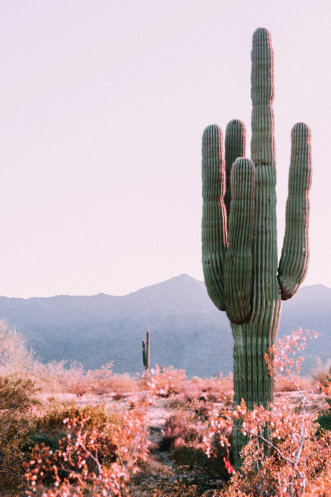

Kesalahan Umum Pemula Merawat Kaktus
Banyak pemula mengira kaktus tidak boleh disiram sama sekali. Padahal, penyebab utama kaktus mati justru terlalu sering disiram.

Daftar Kesalahan yang Sering Terjadi
- Menyiram terlalu sering sehingga akar busuk
- Memakai pot tanpa lubang drainase
- Menaruh tanaman di tempat yang kurang cahaya
- Memakai tanah biasa tanpa campuran pasir
Perbedaan Kaktus dan Sukulen
| Aspek | Kaktus | Sukulen |
|---|---|---|
| Duri | Biasanya berduri | Umumnya tidak berduri |
| Penyimpan air | Batang | Daun |